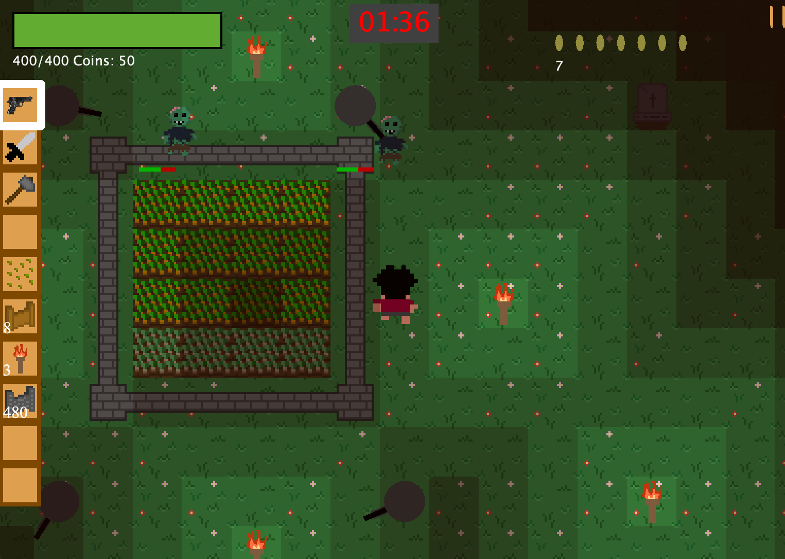

Farm Defense Game
A 2D base defense and farming game written in Java using only standard Java libraries (Java AWT, Java sound API). I was the lead developer in a team of 4 developers making this project so along with writing code I also assigned tasks and organized development.
View Project